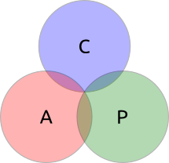
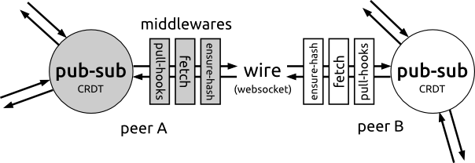
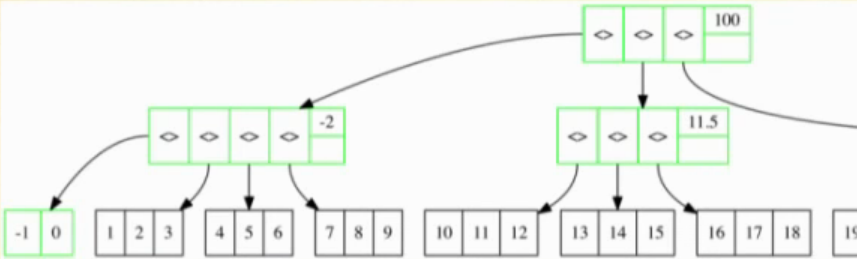
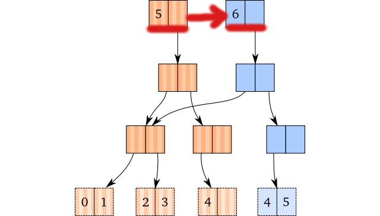
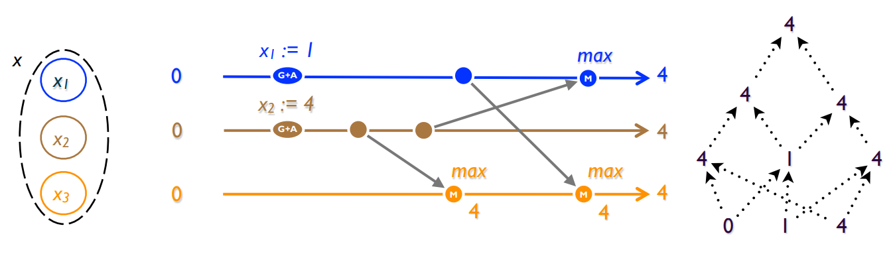
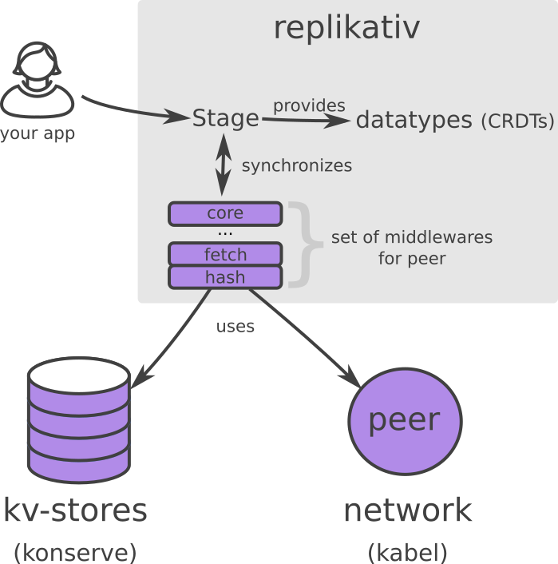

Distributed Systems made Simple
Christian Weilbach
Created: 2017-07-27 Do 18:29
About
- master student in machine learning
- professional app development & consulting with Clojure at http://lambdaforge.io
- replikativ, part of syncfree project
Outline
- Big picture
- technical design of replikativ
Why?
Data rules the world
- most big IT businesses control, own and sell
data - vendor-lockin into DBs/Clouds/application-formats form of domination \(\Rightarrow\) highly profitable
- most important parts of software stack now open-source
- but more data than ever privatized in internet silos
- APIs = abonnement to your & other people's data
AI is coming
- access to data will determine "intelligence"
- somebody else applies statistics on you
- but you cannot and will never know
- Google, FB, … can only do \(1\%\) of important stuff
- cooperative infrastructure? \(\Rightarrow\) data sharing
What if…
- one could clone the application state?
- could share (encrypted) application data and develop different code-bases around it
- one could alter the state anywhere and don't give up control to a single place under somebody else's control?
- one could do statistical analysis together with the users?
Summary

Problem
- read-scaling solved already with BitTorrent, Datomic
- make everything immutable
- Clojure is perfect language
- writing: mutable state?
CAP

- distributed writes are well-studied
- but different consistency levels possible
- strongly consistent systems require majority partition to make progress: single writer semantics
- strongest available and fault tolerant formalism is strong eventual consistency
Practicality
- can be used as replication layer e.g. for
react.js+ SQL-likedatascript - do not worry about network topology
- develop with browser first and don't settle on backend technology
only \(\Rightarrow\) cross-platform:
ClojureScriptforBrowser\(\Rightarrow\) js-bindingsClojurefor theJVM\(\Rightarrow\) Java-bindings
Lots of hammock time

Motivation
- collect all data
- baseline state management
- composition of databases possible
Strategy
- distributed systems always have tradeoffs
- goal: Clojure toolbox
- simple primitives for distributed databases
- provide abstractions to renegotiate tradeoffs \(\Rightarrow\) CRDTs
- should be decoupled:
- model state as data & pure functions
- abstract IO for cross-platform
Problem: Decoupling
- created by gradually factoring out
- try to model core logic purely
- translate to IO
- "Design is about taking things apart." R. Hickey
Decoupling IO
- abstractions over IO primitives
- should be minimal interface to do efficient IO
- not get in your way
- need network and safe durability IO
Isomorphic Clojure(Script)
- avoid multiple code-bases
- rather help port Clojure stack to new hosts, e.g. core.async to CLR
- but: try to minimize performance penalties
core.async
- leverage async IO everywhere
- required for shared codebase with ClojureScript
- scalable infrastructure
- trivial parallelization
superv.async
- address error-handling in distributed systems head-on
- steal Erlang-style error-handling: Let it crash
- handles IO errors, e.g. reconnects
(let [try-fn (fn [S] (go-try S (throw (ex-info "stale" {})))) start-fn (fn [S] ;; will be called again on retries (go-try S (try-fn S) ;; triggers restart after stale-timeout 42))] (<?? S (restarting-supervisor start-fn :retries 3 :stale-timeout 1000)))
konserve
- minimum interface is ACID kv-store \(\Rightarrow\) supports transactions on single key
- minimum storage everywhere provided: filestore, indexeddb
- efficient backends like LevelDB
- used by people in production
(def store (<!! (new-fs-store "/tmp/store"))) (<!! (k/assoc-in store ["foo" :bar] {:foo "baz"})) (<!! (k/get-in store ["foo" :bar :foo])) ;; => "baz"
kabel
- minimum interface: bidirectional communication is channel pair
- no server-client distinction!
- used by datproject 
Data layout
Global address space
- avoid conflicts
- map data to non-colliding content hashes
- must be safe against adversaries
- read-only by default: content-addressable memory
- provide special mutable identities later
hasch
(uuid {:a [1 2 3] "b" {"Name" ["Peter" "Smith"]} \c #inst "2001-09-09T01:46:40.000-00:00"}) ;; => #uuid "38c4935c-fa73-50e5-b8a5-82b3948898cc"
hasch
- provides crypto-graphic data hashes
- integrity of global address space can be ensured
- usable with crypto libs, e.g. geheimnis
- used by onyx
persistent durable datastructures
- Merkle datastructures through hasch
- append-log (linked list) in konserve
- trees?
hitchhiker-tree
- fractal: mixture of append-log and b+-tree
- persistent: uses path copying (Okasaki)
- supports batching
- balanced: guaranteed optimal bound of IO ops
hitchhiker-tree
 (David Greenbergs talk at Strangeloop 2016)
Mutable state
- model identities with persistent datastructures
\(\Rightarrow\) no write conflicts possible except for root 
Decoupling distributed state
- no coordination between peers should be necessary
\(\Rightarrow\) always available
\(\Rightarrow\) high scalability - can embed and build stronger semantics on top
Eventually Consistent Datastructures
- metadata of CRDTs
- think about:
- partial orders
- causal consistency
- reordering \(\Rightarrow\) total order
Conflict-free Replicated DataTypes (CRDTs)

- "A comprehensive study of Convergent and Commutative Replicated Data Types"
- resolve conflicts
- contain metadata to track information about history of events
CRDTs
- well-studied
- used by industry, e.g. soundcloud,
- efficient conflict-resolution
- easy to understand and to implement in replikativ
- cannot express all kinds of updates on data-structures
- scale well
Examples
- OR-Map: Hash-Map
- CDVCS: git-like data management
- LWWR: last-writer wins semantics
replikativ

Limitations & next steps
Improve P2P middleware
- scalable global communication
- integrate hitchhiker-tree
- both as log and as snapshot
P2P gossip protocol
- Goal: efficient routing
- map pub-sub space to peers
- will achieve high connectivity
DHT anyone?
- ideally use a kademelia-based DHT for read-only values
- can already embed content-addressable stores (immutable)
- e.g. dat-project, ipfs
Reactive Datalog - datsync
- eventually consistent Datom store
- reactive \(\Rightarrow\) materialized views
- partial replication
- with transactional datatype semantics similar to Datomic
edn-CRDT
- like JSON-CRDT
- nesting possible
Good demo applications!
- so far:
- topiq as twitter clone
- chat42 react-native app
- filesync
- twitter-collector
References
- https://github.com/replikativ/replikativ
- Draft version of Whitepaper: http://arxiv.org/abs/1508.05545
- Marc Shapiro, Nuno Preguiça, Carlos Baquero, Marek Zawirski, A comprehensive study of Convergent and Commutative Replicated Data Types
Backlog
Attempts from free software community
P2P solutions
- e.g.
GNUnet,Freenet, darknet solutions etc. complect distributed system with privacy and cryptography
\(\Rightarrow\) scale badly
\(\Rightarrow\) avoid data pooling for statistics - try to solve specific application-level problems in a
single-shot, e.g.
Diaspora,Friendica,Twister
\(\Rightarrow\) often lack sound distributed semantics/theory
\(\Rightarrow\) difficult to change and adapt - only read-scaling like
BitTorrent,amule,IPFS
Backend solutions
- very mature, feature-rich space with countless products
e.g.
Riak,CouchDB,Cassandra,Datomicfor the data-center - scale very well, some have well-defined consistency guarantees
(many though have not, e.g.
MongoDB,Redis,ElasticSearch,…) - make problem worse by making data silos scalable
- clients only consume views in form of frontends
Blockchains
- model strong consistency
- core aspect is way consensus is reached
- Proof of Work (Bitcoin)
- Proof of Stake (Ethereum v2)
- Proof of Importance (NEM)
- …
- share problems of scaling with strongly consistent systems, e.g. Paxos
- single application through a sound combination of concepts,
e.g.
bitcoinblockchain
DVCS
- most code versioned with well-designed and mature systems
like
git,mercurial,darcs - cooperation, e.g. through
github, is very inspiring githas no automated replication- can be used for data, e.g.
JSON - but these force line-based text-files in a filesystem structure
- scale badly with binary blobs
- most data is managed in mutable places like SQL databases/document stores